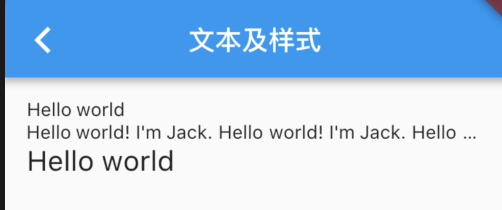

3.1 文本及样式
3.1.1 Text
Text 用于显示简单样式文本，它包含一些控制文本显示样式的一些属性，一个简单的例子如下：
Text("Hello world",
textAlign: TextAlign.left,
);
Text("Hello world! I'm Jack. "*4,
maxLines: 1,
overflow: TextOverflow.ellipsis,
);
Text("Hello world",
textScaleFactor: 1.5,
);
运行效果如图3-1所示：

-
textAlign：文本的对齐方式；可以选择左对齐、右对齐还是居中。注意，对齐的参考系是Text widget 本身。本例中虽然是指定了居中对齐，但因为 Text 文本内容宽度不足一行，Text 的宽度和文本内容长度相等，那么这时指定对齐方式是没有意义的，只有 Text 宽度大于文本内容长度时指定此属性才有意义。下面我们指定一个较长的字符串：Text("Hello world "*6, //字符串重复六次 textAlign: TextAlign.center, )；运行效果如图3-2所示：

字符串内容超过一行，Text 宽度等于屏幕宽度，第二行文本便会居中显示。
maxLines、overflow：指定文本显示的最大行数，默认情况下，文本是自动折行的，如果指定此参数，则文本最多不会超过指定的行。如果有多余的文本，可以通过overflow来指定截断方式，默认是直接截断，本例中指定的截断方式TextOverflow.ellipsis，它会将多余文本截断后以省略符“...”表示；TextOverflow 的其他截断方式请参考 SDK 文档。textScaleFactor：代表文本相对于当前字体大小的缩放因子，相对于去设置文本的样式style属性的fontSize，它是调整字体大小的一个快捷方式。该属性的默认值可以通过MediaQueryData.textScaleFactor获得，如果没有MediaQuery，那么会默认值将为1.0。
3.1.2 TextStyle
TextStyle用于指定文本显示的样式如颜色、字体、粗细、背景等。我们看一个示例：
Text("Hello world",
style: TextStyle(
color: Colors.blue,
fontSize: 18.0,
height: 1.2,
fontFamily: "Courier",
background: Paint()..color=Colors.yellow,
decoration:TextDecoration.underline,
decorationStyle: TextDecorationStyle.dashed
),
);
效果如图3-3所示：

此示例只展示了 TextStyle 的部分属性，它还有一些其他属性，属性名基本都是自解释的，在此不再赘述，读者可以查阅SDK文档。值得注意的是：
-
height：该属性用于指定行高，但它并不是一个绝对值，而是一个因子，具体的行高等于fontSize*height。 -
fontFamily：由于不同平台默认支持的字体集不同，所以在手动指定字体时一定要先在不同平台测试一下。 -
fontSize：该属性和 Text 的textScaleFactor都用于控制字体大小。但是有两个主要区别：fontSize可以精确指定字体大小，而textScaleFactor只能通过缩放比例来控制。textScaleFactor主要是用于系统字体大小设置改变时对 Flutter 应用字体进行全局调整，而fontSize通常用于单个文本，字体大小不会跟随系统字体大小变化。
3.1.3 TextSpan
在上面的例子中，Text 的所有文本内容只能按同一种样式，如果我们需要对一个 Text 内容的不同部分按照不同的样式显示，这时就可以使用TextSpan，它代表文本的一个“片段”。我们看看 TextSpan 的定义:
const TextSpan({
TextStyle style,
String text,
List<TextSpan> children,
GestureRecognizer recognizer,
});
其中style 和 text属性代表该文本片段的样式和内容。 children是一个TextSpan的数组，也就是说TextSpan可以包括其他TextSpan。而recognizer用于对该文本片段上用于手势进行识别处理。下面我们看一个效果（图3-4），然后用TextSpan实现它。

源码：
Text.rich(TextSpan(
children: [
TextSpan(
text: "Home: "
),
TextSpan(
text: "https://flutterchina.club",
style: TextStyle(
color: Colors.blue
),
recognizer: _tapRecognizer
),
]
))
- 上面代码中，我们通过 TextSpan 实现了一个基础文本片段和一个链接片段，然后通过
Text.rich方法将TextSpan添加到 Text 中，之所以可以这样做，是因为 Text 其实就是 RichText 的一个包装，而RichText 是可以显示多种样式(富文本)的 widget。 _tapRecognizer，它是点击链接后的一个处理器（代码已省略），关于手势识别的更多内容我们将在后面单独介绍。
3.1.4 DefaultTextStyle
在 Widget 树中，文本的样式默认是可以被继承的（子类文本类组件未指定具体样式时可以使用 Widget 树中父级设置的默认样式），因此，如果在 Widget 树的某一个节点处设置一个默认的文本样式，那么该节点的子树中所有文本都会默认使用这个样式，而DefaultTextStyle正是用于设置默认文本样式的。下面我们看一个例子：
DefaultTextStyle(
//1.设置文本默认样式
style: TextStyle(
color:Colors.red,
fontSize: 20.0,
),
textAlign: TextAlign.start,
child: Column(
crossAxisAlignment: CrossAxisAlignment.start,
children: <Widget>[
Text("hello world"),
Text("I am Jack"),
Text("I am Jack",
style: TextStyle(
inherit: false, //2.不继承默认样式
color: Colors.grey
),
),
],
),
);
上面代码中，我们首先设置了一个默认的文本样式，即字体为20像素(逻辑像素)、颜色为红色。然后通过DefaultTextStyle 设置给了子树 Column 节点处，这样一来 Column 的所有子孙 Text 默认都会继承该样式，除非 Text 显示指定不继承样式，如代码中注释2。示例运行效果如图3-5：

3.1.5 字体
可以在 Flutter 应用程序中使用不同的字体。例如，我们可能会使用设计人员创建的自定义字体，或者其他第三方的字体，如 Google Fonts 中的字体。本节将介绍如何为 Flutter 应用配置字体，并在渲染文本时使用它们。
在 Flutter 中使用字体分两步完成。首先在pubspec.yaml中声明它们，以确保它们会打包到应用程序中。然后通过TextStyle属性使用字体。
1. 在asset中声明
要将字体文件打包到应用中，和使用其他资源一样，要先在pubspec.yaml中声明它。然后将字体文件复制到在pubspec.yaml中指定的位置，如：
flutter:
fonts:
- family: Raleway
fonts:
- asset: assets/fonts/Raleway-Regular.ttf
- asset: assets/fonts/Raleway-Medium.ttf
weight: 500
- asset: assets/fonts/Raleway-SemiBold.ttf
weight: 600
- family: AbrilFatface
fonts:
- asset: assets/fonts/abrilfatface/AbrilFatface-Regular.ttf
2. 使用字体
// 声明文本样式
const textStyle = const TextStyle(
fontFamily: 'Raleway',
);
// 使用文本样式
var buttonText = const Text(
"Use the font for this text",
style: textStyle,
);
3. Package中的字体
要使用 Package 中定义的字体，必须提供package参数。例如，假设上面的字体声明位于my_package包中。然后创建 TextStyle 的过程如下：
const textStyle = const TextStyle(
fontFamily: 'Raleway',
package: 'my_package', //指定包名
);
如果在 package 包内部使用它自己定义的字体，也应该在创建文本样式时指定package参数，如上例所示。
一个包也可以只提供字体文件而不需要在 pubspec.yaml 中声明。 这些文件应该存放在包的lib/文件夹中。字体文件不会自动绑定到应用程序中，应用程序可以在声明字体时有选择地使用这些字体。假设一个名为my_package的包中有一个字体文件：
lib/fonts/Raleway-Medium.ttf
然后，应用程序可以声明一个字体，如下面的示例所示：
flutter:
fonts:
- family: Raleway
fonts:
- asset: assets/fonts/Raleway-Regular.ttf
- asset: packages/my_package/fonts/Raleway-Medium.ttf
weight: 500
lib/是隐含的，所以它不应该包含在 asset 路径中。
在这种情况下，由于应用程序本地定义了字体，所以在创建TextStyle时可以不指定package参数：
const textStyle = const TextStyle(
fontFamily: 'Raleway',
);